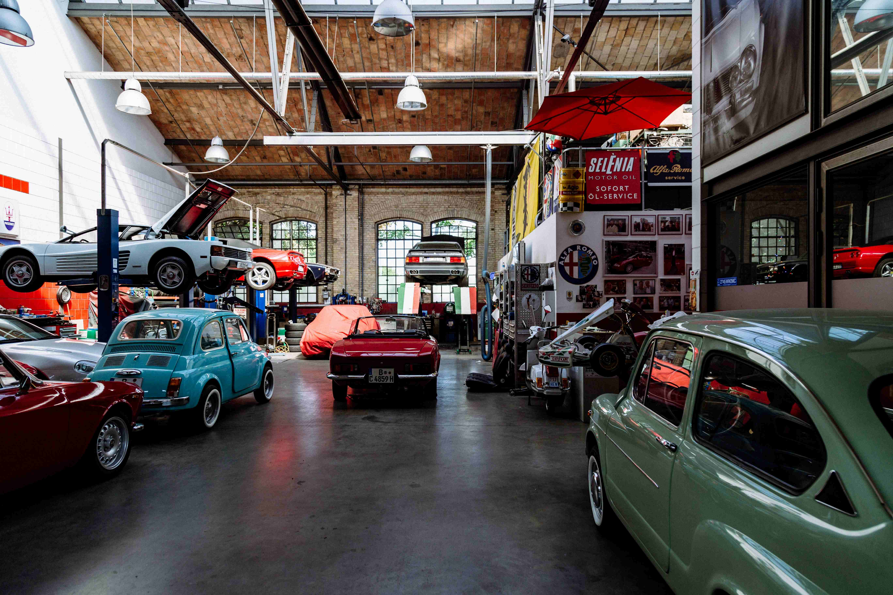

Die Werkstatt
Hinter der Ausstellungshalle liegt unsere Werkstatt. Hier entstehen und bleiben die Fahrzeuge, die Sie in der Halle sehen. Besucher dürfen durch die Glasscheibe zuschauen.
Was wir für Oldtimer tun
Restauration
Vom Rostschaden bis zum kompletten Neuaufbau: Wir bringen Ihren Oldtimer zurück in den Originalzustand und dokumentieren jeden Schritt mit Fotos.
Service
Ölwechsel, Bremsen, Vergaser einstellen. Wir kennen die typischen Schwachstellen alter Motoren und haben die passenden Ersatzteile.
Verkauf
Wir verkaufen geprüfte Fahrzeuge mit lückenloser Dokumentation, auch auf Kommission. Aktuelle Angebote finden Sie in der Ausstellung.

Handarbeit mit Geduld
Eine Restauration dauert bei uns zwischen drei Monaten und zwei Jahren. Wir nehmen uns die Zeit, weil sich bei alten Autos hinter jeder Schraube eine Überraschung verstecken kann.
Teile, die es nicht mehr zu kaufen gibt, fertigen wir wenn möglich selbst an.
Preisliste Service
Der Stundenansatz beträgt CHF 140. Die Preise gelten ohne Material.
| Leistung | Dauer | Preis ab |
|---|---|---|
| Ölwechsel mit Filter | 1 Std. | CHF 140 |
| Bremsen prüfen und einstellen | 2 Std. | CHF 280 |
| Zündung und Elektrik prüfen | 2 Std. | CHF 280 |
| Vergaser reinigen und einstellen | 3 Std. | CHF 420 |
| Zustandsbericht vor dem Kauf | 3 Std. | CHF 420 |
| Grosser Service | 1 Tag | CHF 1'120 |
Termin vereinbaren
Rufen Sie uns an oder schreiben Sie uns kurz, was an Ihrem Auto gemacht werden soll.
Zum Kontaktformular